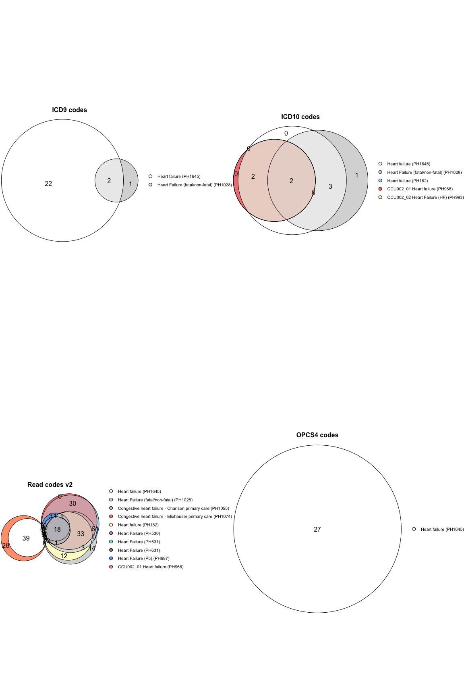

The goal of heRmes is to standardise the heart failure phenotyping of collections of electronic health records.
Installation
You can install the latest version of heRmes like so:
# install.packages("devtools")
devtools::install_github("nicksunderland/heRmes")Phenotypes
The code lists underpinning the various phenotypes are stored in text files within the package structure at: inst/extdata/ukhdr_phenotypes. The format of the file matches that used by the UKHDR Phenotype Library, but the important columns are: code, description, coding_system.name, phenotype_id and phenotype_name. Below is an example of how to view the available phenotypes and obtain the codes.
Avaiable phenotypes
For example, view the first 5 phenotypes.
get_phenotypes()[1:5]
#> CCU002_02 Cardiomyopathy
#> "PH1002"
#> Acute Myocardial Infarction (AMI)
#> "PH1024"
#> Heart Failure (fatal/non-fatal)
#> "PH1028"
#> Congestive heart failure - Charlson primary care
#> "PH1055"
#> Myocardial infarction - Charlson primary care
#> "PH1062"Codes
View the codes for PH1645 corresponding to the HERMES Heart Failure phenotype.
# top 5 codes
get_codes(pheno_id = "PH1645")[1:5, c("phenotype_id", "phenotype_name", "coding_system.name", "code")]
#> phenotype_id phenotype_name coding_system.name code
#> <char> <char> <char> <char>
#> 1: PH1645 Heart failure ICD9 codes 40201
#> 2: PH1645 Heart failure ICD9 codes 42830
#> 3: PH1645 Heart failure ICD9 codes 42832
#> 4: PH1645 Heart failure ICD9 codes 4281
#> 5: PH1645 Heart failure ICD9 codes 42843Phenotyping a dataset
Create sample data. This can be in long (only one column containing diagnosis codes) or wide format (multiple columns containing diagnosis codes). n.b. prioritising coding based on diagnosis code position (e.g. primary vs. secondary vs. tertiary positions) is not currently supported.
set.seed(2020)
n <- 10
dat <- data.frame(ids = paste0("ID_", c(1:(n/2), 1:(n/2))),
codes = sample(c("I420", "foo", "bar", "baz"), n, replace = TRUE),
codes1 = sample(c("I420", "foo", "bar", "baz"), n, replace = TRUE))
dat
#> ids codes codes1
#> 1 ID_1 baz I420
#> 2 ID_2 baz I420
#> 3 ID_3 bar baz
#> 4 ID_4 foo baz
#> 5 ID_5 baz baz
#> 6 ID_1 I420 foo
#> 7 ID_2 I420 foo
#> 8 ID_3 baz baz
#> 9 ID_4 foo foo
#> 10 ID_5 foo I420Phenotype the individuals with phenotype PH1643 (heart failure syndrome) or PH1646 (cardiomyopathy), excluding phenotypes PH1637 (congenital heart disease) and PH1636 (myocardial infarction). There can be multiple included or excluded phenotypes given in a list.
result <- phenotype(x = dat,
id_col = "ids",
code_cols = list("ICD10 codes" = c("codes", "codes1")),
include = list("PH1643", "PH1646"),
exclude = list("PH1637", "PH1636", "PH1640"))
#> Phenotyping...
#> [i] processing 10 records
#> [i] pivoting data longer
#> [i] getting inclusion phenotype codes from PhenoID(s) PH1643, PH1646
#> [i] getting exclusion phenotype codes from PhenoID(s) PH1637, PH1636, PH1640
#> [i] assessing phenotype PH1643
#> [i] assessing phenotype PH1646
#> [i] assessing phenotype PH1637
#> [i] assessing phenotype PH1636
#> [i] assessing phenotype PH1640
#> [i] summarising phenotyping of participants
#> [i] finished
result[]
#> ids PH1643 PH1646 PH1637 PH1636 PH1640 none include exclude overall
#> <char> <lgcl> <lgcl> <lgcl> <lgcl> <lgcl> <lgcl> <lgcl> <lgcl> <lgcl>
#> 1: ID_1 FALSE TRUE FALSE FALSE FALSE FALSE TRUE FALSE TRUE
#> 2: ID_2 FALSE TRUE FALSE FALSE FALSE FALSE TRUE FALSE TRUE
#> 3: ID_3 FALSE FALSE FALSE FALSE FALSE TRUE FALSE FALSE FALSE
#> 4: ID_4 FALSE FALSE FALSE FALSE FALSE TRUE FALSE FALSE FALSE
#> 5: ID_5 FALSE TRUE FALSE FALSE FALSE FALSE TRUE FALSE TRUECode formatting issues
Many of the coding systems have slight formating differences - for example an ICD-10 code may appear as I509 or I50.9 in a dataset. The phenotype() provides a way to clean these codes through use of the gsub argument. This takes a 3 element list: [[1]] is a string representing the regular expression pattern, [[2]] is the replacement string, and [[3]] is a character or character vector which can be one or more of: x (apply to codes in x), pheno (apply to all codes in phenotypes), both (apply to everything), or a valid phenotype ID found in include or exclude (apply to specific phenotype datasets). Other arguments can be passed to gsub through ....
It is important to inspect your dataset (x) and phenotype coding (use get_codes()) prior to running the phenotyping to avoid join issues related to formatting differences.
Output formatting can be changed by altering the inputs. If the phenotype IDs are named, these names are used as column names in the result. The overall result is given in the column overall, although this can be renamed by giving the name parameter.
# change format
dat[10, "codes1"] <- "I42.0"
dat[]
#> ids codes codes1
#> 1 ID_1 baz I420
#> 2 ID_2 baz I420
#> 3 ID_3 bar baz
#> 4 ID_4 foo baz
#> 5 ID_5 baz baz
#> 6 ID_1 I420 foo
#> 7 ID_2 I420 foo
#> 8 ID_3 baz baz
#> 9 ID_4 foo foo
#> 10 ID_5 foo I42.0
# without dealing with the error ID_5 is incorrectly classified as no HF.
wrong <- phenotype(x = dat,
id_col = "ids",
code_cols = list("ICD10 codes" = c("codes", "codes1")),
include = list(HFsyn = "PH1643", CM = "PH1646"),
exclude = list(congHD = "PH1637", MI = "PH1636", HCM = "PH1640"),
name = "Heart Failure")
#> Phenotyping...
#> [i] processing 10 records
#> [i] pivoting data longer
#> [i] getting inclusion phenotype codes from PhenoID(s) PH1643, PH1646
#> [i] getting exclusion phenotype codes from PhenoID(s) PH1637, PH1636, PH1640
#> [i] assessing phenotype PH1643
#> [i] assessing phenotype PH1646
#> [i] assessing phenotype PH1637
#> [i] assessing phenotype PH1636
#> [i] assessing phenotype PH1640
#> [i] summarising phenotyping of participants
#> [i] finished
wrong[]
#> ids HFsyn CM congHD MI HCM none include exclude
#> <char> <lgcl> <lgcl> <lgcl> <lgcl> <lgcl> <lgcl> <lgcl> <lgcl>
#> 1: ID_1 FALSE TRUE FALSE FALSE FALSE FALSE TRUE FALSE
#> 2: ID_2 FALSE TRUE FALSE FALSE FALSE FALSE TRUE FALSE
#> 3: ID_3 FALSE FALSE FALSE FALSE FALSE TRUE FALSE FALSE
#> 4: ID_4 FALSE FALSE FALSE FALSE FALSE TRUE FALSE FALSE
#> 5: ID_5 FALSE FALSE FALSE FALSE FALSE TRUE FALSE FALSE
#> Heart Failure
#> <lgcl>
#> 1: TRUE
#> 2: TRUE
#> 3: FALSE
#> 4: FALSE
#> 5: FALSE
# deal with formatting issue using gsub
pheno <- phenotype(x = dat,
id_col = "ids",
code_cols = list("ICD10 codes" = c("codes", "codes1")),
include = list(HFsyn = "PH1643", CM = "PH1646"),
exclude = list(congHD = "PH1637", MI = "PH1636", HCM = "PH1640"),
gsub = list("\\.", "", c("x")),
name = "Heart Failure")
#> Phenotyping...
#> [i] processing 10 records
#> [i] pivoting data longer
#> [i] cleaning input codes with regex [ \. ], replacement [ ]
#> [i] getting inclusion phenotype codes from PhenoID(s) PH1643, PH1646
#> [i] getting exclusion phenotype codes from PhenoID(s) PH1637, PH1636, PH1640
#> [i] assessing phenotype PH1643
#> [i] assessing phenotype PH1646
#> [i] assessing phenotype PH1637
#> [i] assessing phenotype PH1636
#> [i] assessing phenotype PH1640
#> [i] summarising phenotyping of participants
#> [i] finished
pheno[]
#> ids HFsyn CM congHD MI HCM none include exclude
#> <char> <lgcl> <lgcl> <lgcl> <lgcl> <lgcl> <lgcl> <lgcl> <lgcl>
#> 1: ID_1 FALSE TRUE FALSE FALSE FALSE FALSE TRUE FALSE
#> 2: ID_2 FALSE TRUE FALSE FALSE FALSE FALSE TRUE FALSE
#> 3: ID_3 FALSE FALSE FALSE FALSE FALSE TRUE FALSE FALSE
#> 4: ID_4 FALSE FALSE FALSE FALSE FALSE TRUE FALSE FALSE
#> 5: ID_5 FALSE TRUE FALSE FALSE FALSE FALSE TRUE FALSE
#> Heart Failure
#> <lgcl>
#> 1: TRUE
#> 2: TRUE
#> 3: FALSE
#> 4: FALSE
#> 5: TRUEUpdate library from UKHDR
This package’s phenotype library can be updated from the UKHDR Phenotype Library API using the below function. This queries the library for phenotypes matching enteries in the search_terms argument.
update_library(search_terms = c("heart failure", "cardiomyopathy", "myocardial infarction"))
#> [i] reading phenotype id: PH25 - skipping, already exists
#> [i] reading phenotype id: PH182 - skipping, already exists
#> [i] reading phenotype id: PH530 - skipping, already exists
#> [i] reading phenotype id: PH531 - skipping, already exists
#> [i] reading phenotype id: PH631 - skipping, already exists
#> [i] reading phenotype id: PH687 - skipping, already exists
#> [i] reading phenotype id: PH968 - skipping, already exists
#> [i] reading phenotype id: PH993 - skipping, already exists
#> [i] reading phenotype id: PH1028 - skipping, already exists
#> [i] reading phenotype id: PH1055 - skipping, already exists
#> [i] reading phenotype id: PH1074 - skipping, already exists
#> [i] reading phenotype id: PH1603 - skipping, already exists
#> [i] reading phenotype id: PH129 - skipping, already exists
#> [i] reading phenotype id: PH145 - skipping, already exists
#> [i] reading phenotype id: PH185 - skipping, already exists
#> [i] reading phenotype id: PH961 - skipping, already exists
#> [i] reading phenotype id: PH1002 - skipping, already exists
#> [i] reading phenotype id: PH215 - skipping, already exists
#> [i] reading phenotype id: PH356 - skipping, already exists
#> [i] reading phenotype id: PH481 - skipping, already exists
#> [i] reading phenotype id: PH530 - skipping, already exists
#> [i] reading phenotype id: PH611 - skipping, already exists
#> [i] reading phenotype id: PH612 - skipping, already exists
#> [i] reading phenotype id: PH613 - skipping, already exists
#> [i] reading phenotype id: PH741 - skipping, already exists
#> [i] reading phenotype id: PH886 - skipping, already exists
#> [i] reading phenotype id: PH942 - skipping, already exists
#> [i] reading phenotype id: PH949 - skipping, already exists
#> [i] reading phenotype id: PH988 - skipping, already exists
#> [i] reading phenotype id: PH1024 - skipping, already exists
#> [i] reading phenotype id: PH1062 - skipping, already existsUpdate library from UKHDR (unpublished)
This package’s phenotype library can be updated with unpublished/development phenotypes from the UKHDR Phenotype Library API using the below function. However, since unpublished phenotypes are not searchable by name, we need to pass the exact ID and also login details for the website (stored in a local .Renviron file in this example.)
# development phenotypes, ids named for readability only
hermes_phenos <- c(`Congenital heart disease` = "PH1637",
`Myocardial infarction` = "PH1636",
`Secondary cardiomyopathies` = "PH1642",
`Hypertrophic cardiomyopathy` = "PH1640",
`Dilated cardiomyopathy` = "PH1638",
`Cardiomyopathy` = "PH1646",
`Heart failure` = "PH1645",
`Non-ischaemic cardiomyopathy`= "PH1639",
`Heart failure syndrome` = "PH1643")
# update
update_library(search_terms = c(),
ids = hermes_phenos,
UKHDR_UN = Sys.getenv("UKHDR_UN"),
UKHDR_PW = Sys.getenv("UKHDR_PW"))Plotting phenotype
To see the intersection of the codes in two or more phenotype files use the plot_code_overlap() function.
plot_code_overlap(pheno_ids = c("PH1645", "PH1028", "PH1055", "PH1074", "PH182", "PH25", "PH530", "PH531", "PH631", "PH687", "PH968", "PH993"),
types = c("ICD10 codes", "ICD9 codes", "OPCS4 codes", "Read codes v2"))
Example phenotyping of UKBB data
Phenotyping of the UK biobank hospital admissions data.
pheno_ukbb <- phenotype(file_path,
id_col = "eid",
code_cols = list("ICD10 codes" = "diag_icd10", "ICD9 codes" = "diag_icd9"),
include = list(HFsyn = "PH1643", CM = "PH1646"),
exclude = list(congHD = "PH1637", MI = "PH1636", HCM = "PH1640"),
gsub = list("\\.", "", c("x")),
name = "Heart Failure")
plot(eulerr::euler(pheno_ukbb[, mget(names(pheno_ukbb)[!names(pheno_ukbb) %in% c("eid", "none")])], shape = "circle"),
quantities = TRUE,
labels = FALSE,
main = list(label = "UKBB Heart failure phenotyping", fontsize = 8, font = 2),
legend = list(fontsize = 8))Plot the ICD-10 HERMES phenotypes
Plot the overlap of the HERMES phenotypes with all other heart failure phenotypes in the UKHDR Phenotype library.
plot_code_overlap(pheno_ids = hermes_phenos, types = c("ICD10 codes"))